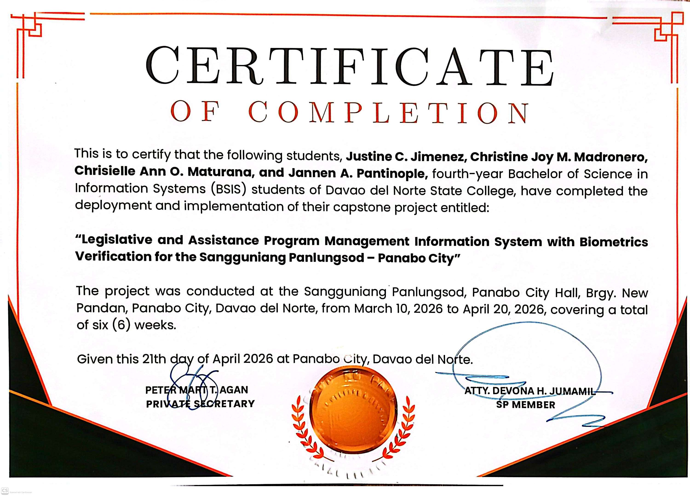

Achievements & Certificates
Successfully Completed Python Essentials 1

Successfully Completed Python Essentials 2

Certificate of Capstone Deployment Completion

Certificate of OJT Completion

"Technology is not just about innovation; it is about creating solutions that create value and positive impact for communities."
I am Jannen A. Pantinople, a Bachelor of Science in Information Systems (BSIS) student from Davao del Norte State College and a resident of Purok San Antonio, La Paz, Carmen, Davao del Norte. Looking back on my academic journey, I have gained valuable knowledge and experiences through various projects, my capstone study, and On-the-Job Training (OJT). These opportunities helped me develop both technical and interpersonal skills, including problem-solving, communication, teamwork, adaptability, time management, and leadership. I am committed to continuous learning, personal growth, and making meaningful contributions wherever my career path leads.
A web-based system developed to streamline financial assistance applications, verification, approval, and monitoring. The system improves efficiency, transparency, and accessibility for both beneficiaries and administrators.
Panabo City, Davao del Norte
February – May 2026
Assisted in client intake, records management, document preparation, data encoding, and administrative support services.
Davao del Norte State College
June – October 2024
Provided clerical support, organized records, managed documents, and assisted in daily office operations.

Interested in collaborating, discussing opportunities, or learning more about my work? Feel free to reach out. I would be happy to connect with you.
pantinoplejannen@dnsc.edu.ph
You can also connect with me through: